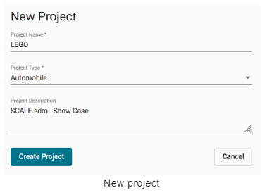

SCALE.project
Basic concepts
Systems Engineering in the Automotive Industry
시스템 엔지니어링은 제품 개발, 특히 주문자 상표 부착 생산업체(OEM)에서 중추적인 역할을 담당합니다. 시스템 엔지니어링은 전체 수명 주기 동안 복잡한 시스템을 설계, 통합 및 관리하는 데 중점을 둔 총체적이고 학제적인 접근 방식입니다.
새로운 제품을 설계하든 단일 제품 구성 요소를 수정하든 시스템 엔지니어링은 다양한 요구 사항의 균형을 맞추고 여러 관점에서 프로젝트를 보기 위해 노력합니다. 고객이 원하고 기대하는 기능은 무엇인가요? 어떤 안전 및 규정 준수 표준을 충족해야 하는가? 생산은 언제 시작될 예정인가요?
Test cases
안전 및 규정 준수 표준에 대해 자세히 살펴봅시다. 자동차를 설계하면서 충돌 안전성을 테스트하고 싶다고 가정해 보겠습니다. 구체적으로 시속 56km로 단단한 장벽에 충돌했을 때 자동차가 어떻게 작동하는지 알고 싶다고 가정해 보겠습니다. 테스트 케이스는 충돌 테스트를 설정하는 방법과 충돌 테스트가 수행되는 조건(예: 장벽, 속도, 온도 및 충격 각도)을 정의합니다.
충돌 테스트가 진행되는 동안 센서와 장치는 더미가 받는 손상 정도를 측정합니다. 예를 들어 충돌 시 운전자의 가슴이 얼마나 휘어지는지 또는 운전자의 대퇴골에 가해지는 힘의 양을 측정할 수 있습니다. 가슴 편향과 대퇴골 힘과 같은 각 측면을 요구 사항이라고 하며, 허용되는 값의 범위와 허용되지 않는 값의 범위가 있습니다.
Requirements
요구 사항은 단독으로 존재하지 않습니다. 오히려 특정 테스트 사례와 관련하여 정의됩니다. 예를 들어 시속 56km/h 정면 충돌 테스트에서 가슴 편향값은 허용 범위 내에 있어야 합니다. 제품 개발의 일부는 향후 제품이 충족해야 하는 요구 사항을 정의하는 것입니다.

Assessment
충돌 테스트 중에 각 요건이 측정되고 값을 받습니다. 예를 들어 충돌 테스트 더미의 가슴이 46mm 휘어진 경우 이 값이 요구 사항의 현재 상태로 저장됩니다.
그런 다음 현재 상태를 허용 가능한 값과 허용되지 않는 값의 범위와 비교하여 실제 값이 목표 값과 얼마나 다른지 확인할 수 있습니다. 프로젝트 관리자는 언제든지 테스트 케이스를 보고 얼마나 많은 요구 사항이 충족되었는지 확인할 수 있습니다.
Initial configuration
Note
관리자와 같이 포괄적인 권한을 가진 사람이 처음에 Project를 구성해야 합니다. 이 사람은 속성, 요구 사항 및 테스트 케이스와 같은 마스터 데이터를 만들고 수정할 수 있는 권한이 있어야 합니다. 이 초기 구성이 완료되면 관리자는 프로젝트 관리자 및 프로젝트 기여자를 위한 계정 등 추가 사용자 계정을 만들 수 있습니다.
초기 구성은 예를 들어 다음과 같은 순서로 완료 할 수 있습니다.
Create MDM attributes
Configuration > MDM > Attributes로 이동합니다.
상단 오른쪽에 New를 클릭하면 새로운 window가 나타납니다.
필요에 따라 설정을 구성합니다.
 를 클릭해서 설정을 저장합니다.
를 클릭해서 설정을 저장합니다.
MDM attributes에 대한 자세한 지침과 각 설정에 대한 설명은 여기에서 확인할 수 있습니다.
Create MDM requirements based on these attributes
Configuration > MDM > Requirements로 이동합니다.
New를 클릭합니다.
필요에 따라 설정을 구성합니다.
- 를 클릭해서 설정을 저장합니다.
MDM requirements에 대한 자세한 지침과 각 설정에 대한 설명은 여기에서 확인할 수 있습니다.
Group the requirements into MDM test cases
Configuration > MDM > Test cases로 이동합니다.
New를 클릭합니다.
테스트 케이스에 대한 정보를 추가하고 테스트 케이스에 포함해야 하는 requirements를 선택합니다.
- 를 클릭해서 설정을 저장합니다.
MDM test cases 구성에 대한 자세한 지침과 각 설정에 대한 설명은 여기에서 확인할 수 있습니다.
Create other user accounts and grant permissions
Configuration > User Management > Users로 이동합니다.
New를 클릭합니다.
필요에 따라 설정을 구성합니다.
- 를 클릭해서 설정을 저장합니다.
MDM user accounts 구성에 대한 자세한 지침과 각 설정에 대한 설명은 여기에서 확인할 수 있습니다.
Set up a project
Project managers set up the project
Project는 처음에 project 설정을 추가, 변경 및 삭제할 수 있는 권한이 있는 사용자(예: project 관리자)가 설정합니다. project가 설정되면 project 관리자는 project에 다른 멤버를 추가할 수 있습니다.
예를 들어 다음과 같은 순서로 프로젝트를 설정할 수 있습니다.
Create a new project
Project를 열어 projects의 overview를 표시합니다.
상단 오른쪽에 New Project를 클릭합니다.
생성할 project의 이름(Name)과 설명란(description)을 작성합니다.
Project 유형(type)을 드롭 다운 메뉴에서 선택합니다.
Create Project를 클릭합니다. project는 overview에 표시되고 다시 편집할 수 있습니다. 예를 들어 생성된 project에 이제 문서(documents), 속성(attributes), 마일스톤(milestones), 요구조건(requirements) 그리고 멤버들(members)을 추가할 수 있습니다.

Open an existing project
Project를 열어 projects의 overview를 표시합니다.
선택사항으로 오른쪽 상단 모서리의 Filter by name 필드에 project 이름을 입력하거나 다음 예정된 마일스톤을 기준으로 project를 정렬할 수 있습니다. 이러한 옵션을 사용하면 원하는 project를 빠르게 찾을 수 있습니다.
목록에서 project의 이름을 클릭합니다. project가 열리고 왼쪽 사이드바에서 Overview가 자동으로 선택됩니다.
Star favorite projects
Project를 즐겨찾기 기능처럼 선호하는 주 project를 설정 할 수 있습니다.
Project를 열어 즐겨찾기 할 project의
 Star 마크를 클릭합니다.
Star 마크를 클릭합니다.즐겨찾기된 project는 상단 메뉴에서 Projects를 선택하면 나타나는 리스트 메뉴의 Starred Projects에 표시됩니다.
다시
Star 마크를 클릭하면 즐겨찾기를 해제할 수 있습니다.
Edit a project’s name or description
Project를 열어 왼쪽 사이드바(sidebar)에서 Settings를 클릭합니다.
Project 이름, 유형, 설명 및 이미지를 편집합니다.
- 를 클릭하여 변경된 사항을 저장합니다.
Manage project documents
Project를 엽니다. Overview는 자동으로 왼쪽 사이드바에서 선택됩니다.
Documents 섹션(section)을 찾습니다. 이곳에서 project 관련 문서를 관리합니다. 문서의 이름과 파일 형식, 문서를 추가한 사용자의 이름이 표 형식의 개요(overview)에 표시됩니다.

Add project attributes
프로젝트 속성(attribues)은 키-값 쌍(key-value pairs)을 사용하여 프로젝트 속성에 대한 기술적 설명을 가능하게 합니다. 이 정보를 통해 프로젝트를 분류하고 향후 관련 프로젝트 요구 사항을 파악할 수 있습니다.
자신의 프로젝트를 엽니다.
왼쪽 사이드바(sidebar)에서 Attributes를 클릭합니다.
Edit를 눌러 새 창을 띄웁니다.
 를 눌러 새 라인을 추가합니다.
를 눌러 새 라인을 추가합니다.왼쪽에 위치한 영역(field)에 속성(attribute)의 이름을 입력합니다. 해당 영역(field)는 자동완성 기능을 가지고 있습니다. 입력할 때 과거에 입력했던 항목들에서 예측해 표시해줍니다.
오른쪽에 위치한 드롭-다운(drop-down) 리스트에서 하나 혹은 두개 이상의 값들을 선택합니다.
Save를 클릭하여 속성들을 업데이트 합니다.
Configure MDM attributes in advance
MDM 속성들은 프로젝트에 추가하기 전에 **Configuration > MDM > Attributes에서 구성되어야 합니다. 이 초기 구성은 MDM 권한이 있는 사용자(ex. admin)가 수행합니다.
Milestones
Add project milestones
자신의 프로젝트를 엽니다. 왼쪽 사이드바(sidebar)에서 Overview가 자동으로 선택됩니다.
Milestones 섹션을 찾아
를 클릭하여 새 창을 표시합니다.(A)에 이름과 (B)에 설명(description)을 입력합니다.
하나의 단일 계획(plan)은 master(C)로 지정하여 가장 관련성이 높은 프로젝트 마일스톤이 포함되어 있음을 나타낼 수 있습니다. 마스터 계획은 시간 스케일(time scale)과 목록에서 가장 먼저 표시됩니다. 그리고 글꼴과 아이콘으로 강조 표시됩니다.
일정에 마일스톤을 원하는 수만큼 추가합니다. 각 마일스톤에 이름, 날짜, 설명을 입력합니다.(D)
Save (H)를 클릭하여 마일스톤 계획을 업데이트 합니다.